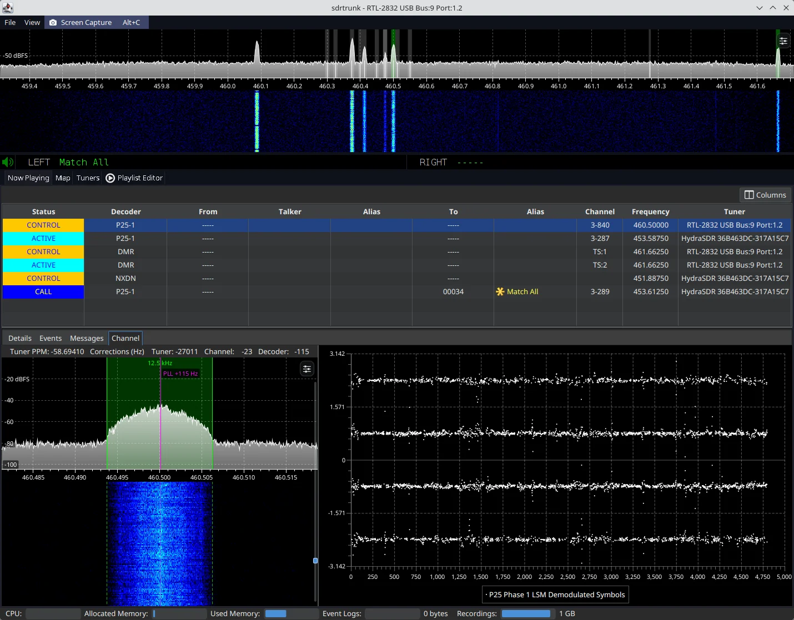
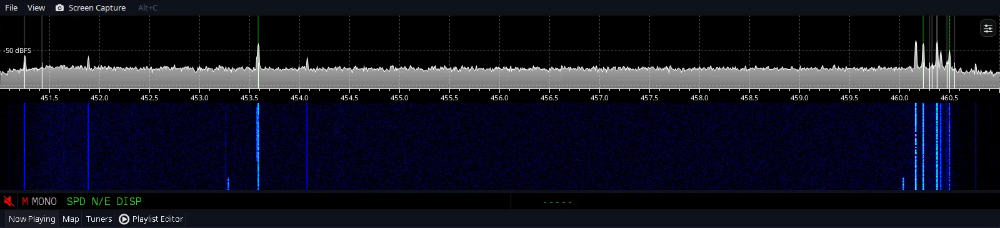
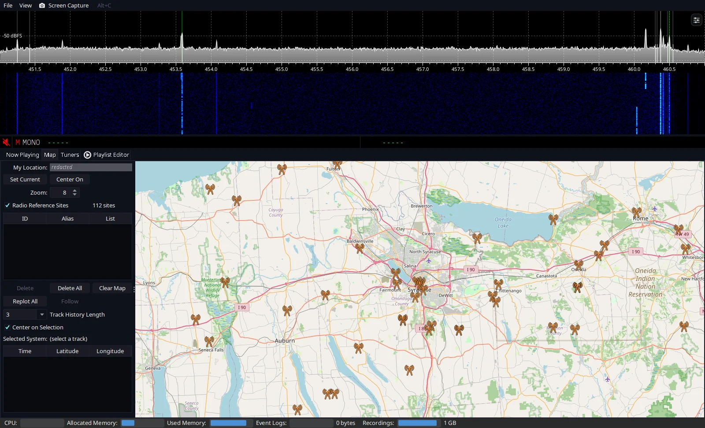
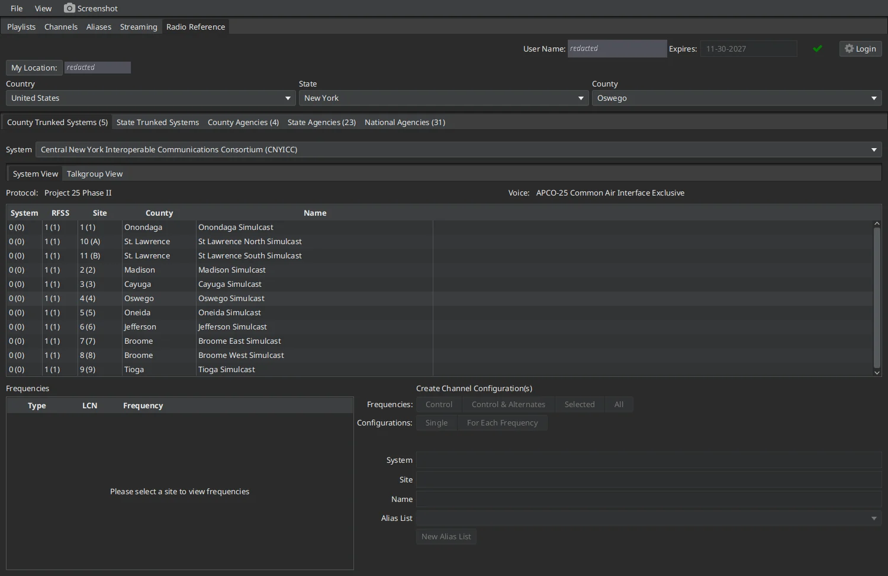
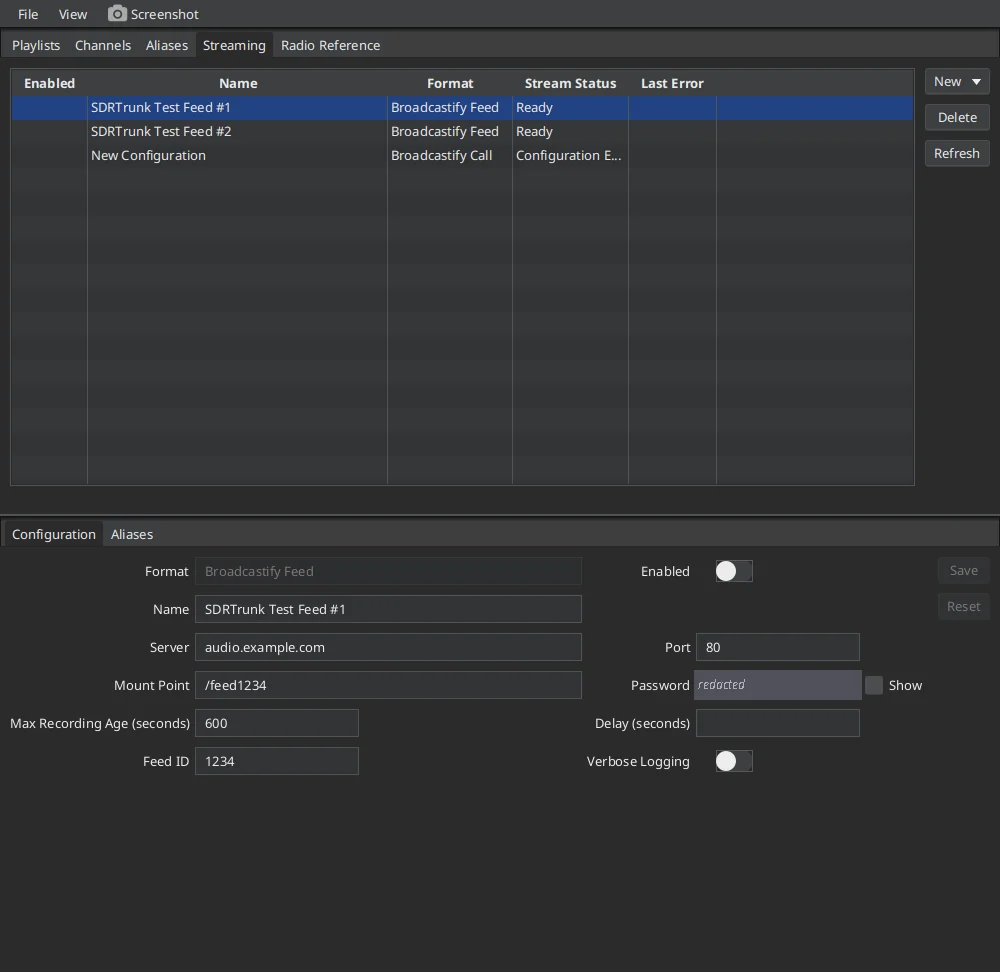

Automatic trunk tracking
Follows calls across P25, DMR, NXDN, MPT-1327 and LTR systems, including simulcast and Phase 2 TDMA. No frequency lists to babysit.
Free & open source · Windows · macOS · Linux
sdrtrunk turns an inexpensive software defined radio into a multi-system trunking scanner. It follows P25, DMR and NXDN calls across the whole system, names who is talking, and lets you listen, record and stream every call.

How it works
A trunked radio system shares a handful of frequencies between thousands of users. A control channel tells each radio where its next call will be. sdrtrunk listens to that control channel, then opens a traffic channel to follow each call as it happens.
Each SDR captures a wide slice of spectrum. One tuner can feed dozens of channels at the same time, and sdrtrunk shares channels across all of your tuners.
Each channel names a frequency and a decoder. Trunking decoders create traffic channels on their own to follow every call.
Give talkgroups and radio IDs real names, colors and icons. Aliases also decide what happens to each call: listen, record, stream, prioritize or mute.
Listen live, record calls to MP3 or WAV, keep event and message logs, and stream to Broadcastify and other services.
Features
A live spectrum and waterfall show every signal your tuners can see. Select any decoding channel to see its spectrum, frequency correction and demodulated symbols, which makes it easy to tune your antenna and calibrate your SDR.

Follows calls across P25, DMR, NXDN, MPT-1327 and LTR systems, including simulcast and Phase 2 TDMA. No frequency lists to babysit.
Mix and match SDRs from different makers. sdrtrunk picks a tuner that covers each channel and shares channels between them for you.
Shows talkgroup and radio IDs with your alias names, plus the talker aliases that DMR and P25 radios broadcast themselves.
Premium subscribers can browse Radio Reference and import trunked systems, sites, talkgroups and conventional frequencies in a few clicks.
Send calls to Broadcastify Calls, Broadcastify Feeds, OpenMHz, Rdio Scanner, Thinline Radio, Icecast and Shoutcast.
Save calls as MP3 or WAV, keep decoded event and message logs, and capture raw baseband to replay later through any decoder.
Plot GPS positions reported by P25, DMR, Fleetsync and Tait radios on a built-in map.
Call priorities, do-not-monitor, two independent audio outputs, duplicate call suppression and alert tones keep listening manageable on busy systems.
Play a sound, run a script or beep when a specific talkgroup or radio keys up, so you never miss the calls that matter to you.
Signal processing uses your CPU's vector (SIMD) instructions, calibrated on your own machine, so a 4-core PC can run several systems.
Self-contained builds for Windows, macOS and Linux on both x86-64 and ARM, including Raspberry Pi boards. Java is bundled.
Open source under the GPL-3.0. No license keys and no subscription. Built in the open with the scanner community.



Radio protocols
Public safety, public works, utilities, transit, business and aviation: if it's trunked or conventional and in the clear, sdrtrunk can probably decode it.
C4FM and simulcast (LSM) control and traffic channels with automatic call following.
TDMA traffic channels followed from a Phase 1 or Phase 2 control channel.
Tier III, Capacity Plus, Capacity Max and Connect Plus, with talker aliases and text messages.
NXDN 4800 and 9600 conventional and trunked systems, including Type-D.
Control channel signaling with automatic traffic channel following.
Logic Trunked Radio signaling and call activity.
Passport trunked radio signaling.
Narrowband FM with noise squelch and optional CTCSS or DCS tone squelch.
AM with squelch, for aviation and other AM voice channels.
Digital voice (P25, DMR and NXDN) uses the JMBE audio library, which sdrtrunk can build for you the first time you need it. Encrypted calls can't be decoded. Protocol names are used for identification only, and trademarks belong to their owners.
Supported hardware
Start with a $30 RTL-SDR dongle, or cover an entire band with a wideband radio. Combine as many as your computer can handle.
RTL-2832 with R820T, R820T2, R828D, E4000, FC0012, FC0013 or FC2580 tuners
Up to 2.88 MHzBest value
R1, R2, Mini and Discovery HF+
Up to 10 MHzBias-T
RSP1, RSP1A, RSP1B, RSP2, RSPduo and RSPdx
Up to 10 MHzNeeds SDRplay API
HackRF One, Pro, Jawbreaker and rad1o
Up to 20 MHz
All bladeRF models
Up to 122 MHzWidest coverage
RFOne (R828D tuner)
Up to 10 MHzBias-T
LimeSDR family
Wideband
Pro and Pro+
Bias-T
Remote rtl_tcp servers, plus sdrtrunk .wav and SDR# .iq baseband recordings
No hardware needed
Download
Each download is a ready-to-run zip with its own Java runtime. Unzip it and run the launcher in the
bin folder.
Windows 10 or 11, 64-bit
macOS 12 or newer
64-bit desktop or Raspberry Pi OS
SHA256SUMSCommunity & support
Start with the documentation, then ask the community. Most decoding problems are solved by calibrating your tuner.
Getting Started, the full User Manual, How-To Guides and FAQ.
Read the docs →Live chat with users and developers in #general, #support and #devel.
Join the server →Email discussion group with years of searchable answers.
Visit the group →Share your setups and ask questions in the user group.
Open the group →GitHub Issues is for bugs and feature requests. Please ask questions on the forums first.
Open GitHub Issues →Star the project, follow development and contribute on GitHub.
View the repository →Before you share a playlist, log or screenshot, check it first. Playlists can contain streaming passwords and API keys, and screenshots can show your Radio Reference user name or location.